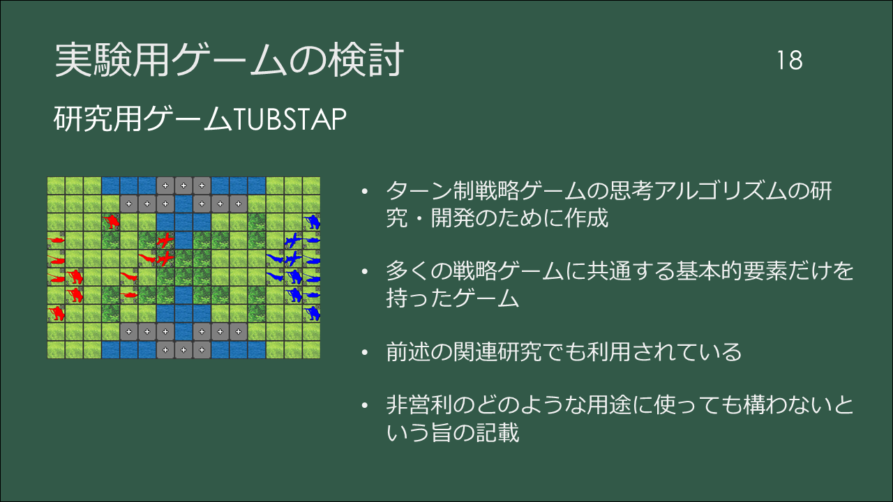
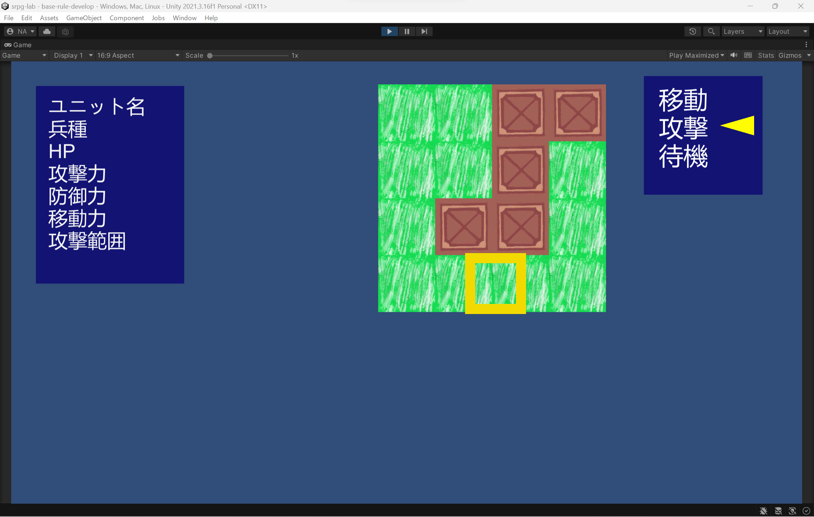
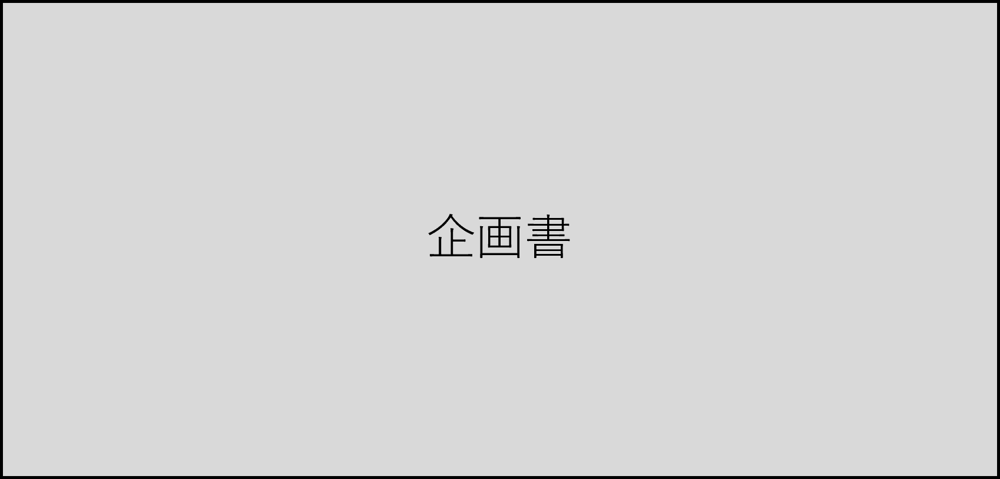
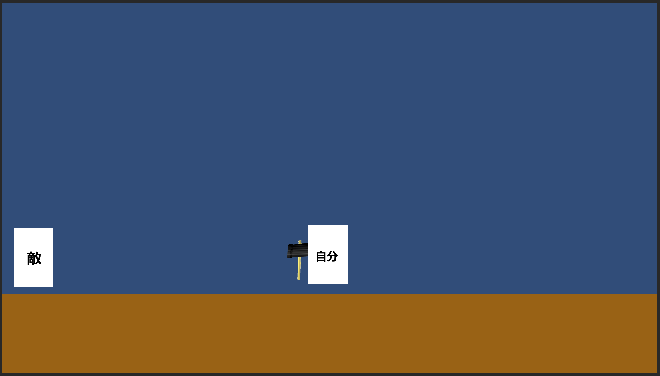
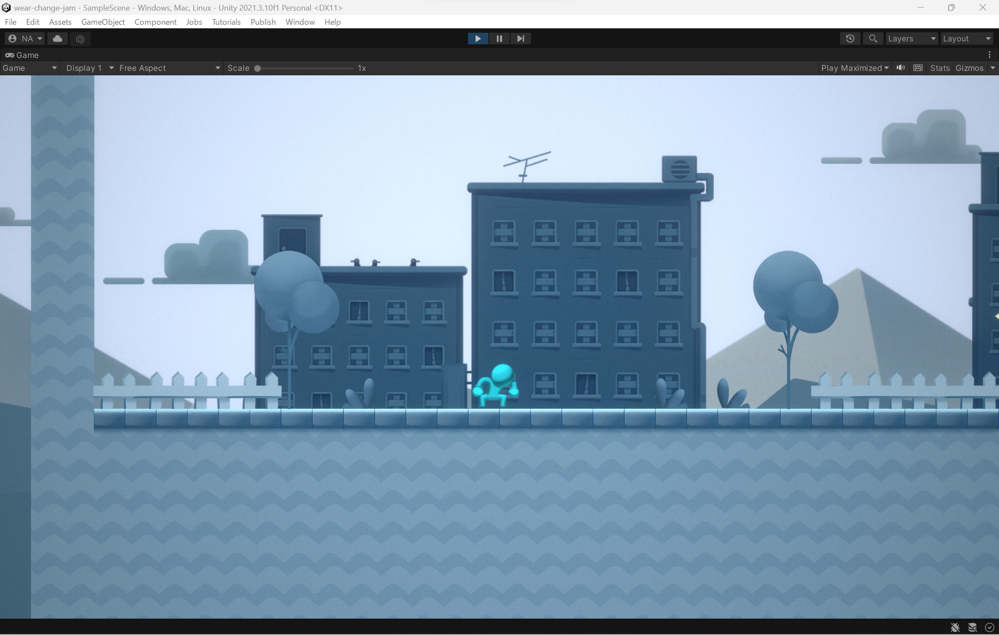
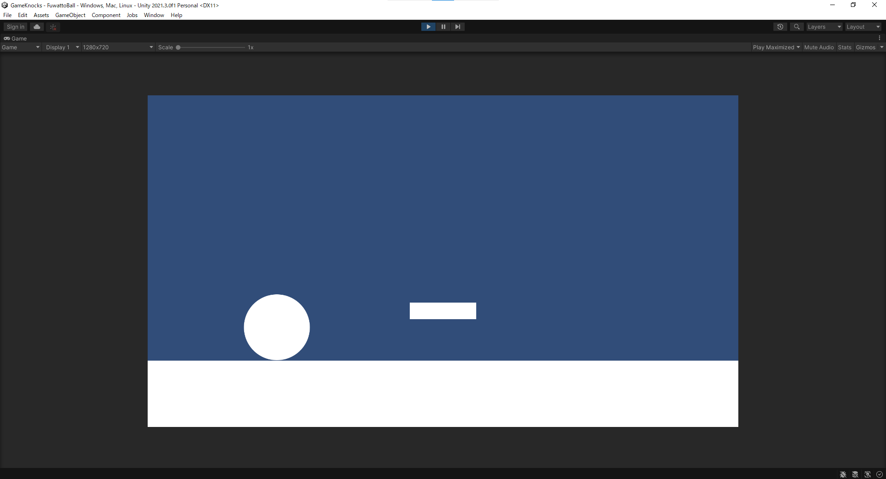
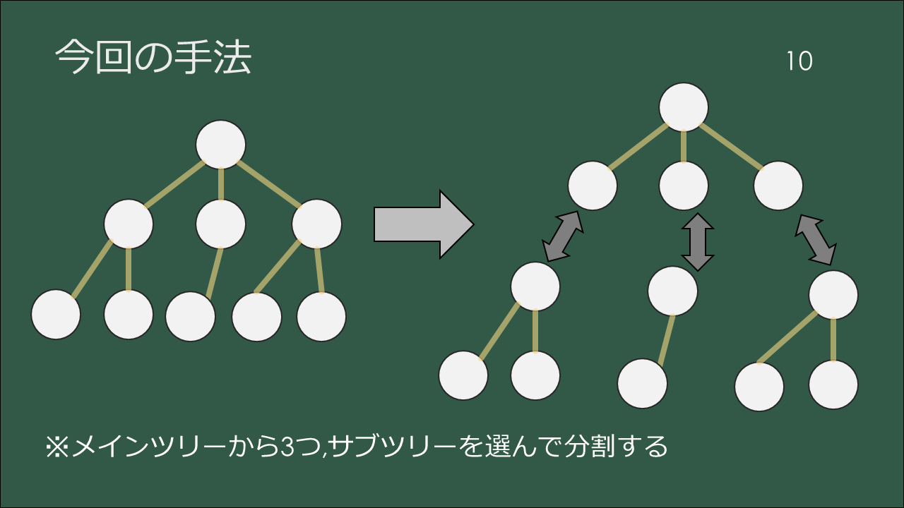
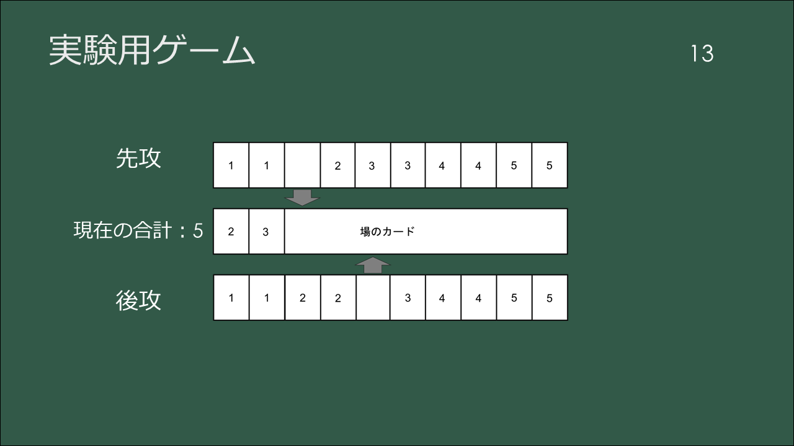

野戸彰大の紹介
40秒で分かる動画
プロフィール

- 氏名 野戸 彰大(ノト アキヒロ)
- 生年月日 1999/10/30
- 性別 男
- 和歌山大学大学院
システム工学研究科2年生
知的モデリング クラスタ
視覚メディア研究室 - かつて所属した団体
クリエゲーム制作プロジェクト(CGP) -
趣味
読書，遠出，自炊，ベース，チェス
代表作
-

※スマホゲーム
テトリスに「割る」という要素を加えると 面白さにどのような変化が生まれるのか検証するために 作成．実際には割る際のハンデが大きいうえ，必ずゲームオーバになることから 遊んでもらった評価はよくなかった．制作当時の資料
実際に私が担当したソースコードです．

詳細な作品および研究内容
2020以前の作品は各画像をクリックした先のファイルをダウンロードすると
ゲームで遊べるようになります．
制作当時の資料も一部置いているので良ければ見て見てください．
2023
-

修士研究．
一部ターン制ストラテジーゲームに登場する 友軍ユニットと呼ばれるNPCユニットの関する研究である．
2022
-

※現在制作中のゲーム
 -

企画が本当に面白いか確かめるために制作したゲーム作品
-

友人二人と一日限りで制作したゲーム． 学部時代，締め切りを設けずゲームチームを結成しては，なあなあで終わる という事例がよくあったことから，1日限りと明確な締め切りを設け， それまでに形にする事を目的に制作した．
制作当時の資料
実際に書いたソースコードです．
-

2019年の企画作成の理論にてお世話になったOBの先輩より 「床がただ固定されているのと，ふわっと下に沈むのとで 遊ぶ時の感触が変わる」という話を聞き，検証目的で制作したゲーム． 実際にこうも感触が変わるものかと驚いた．
実際に書いたソースコードです．
※研究，授業との兼ね合いもあり，少人数による検証目的の作品のみ
2021
-

卒業研究．

モンテカルロ木探索を並列実行する方法に関する研究である． 私は，モンテカルロ木の木構造をメインツリーとサブツリーに分割し， ツリーごとに並列処理する手法にて研究した．実験に用いたゲーム
研究関連の資料です．
※体調不良と卒業研究，院進学のためゲーム作品はナシ
2020
-
テトリスに「割る」という要素を加えると 面白さにどのような変化が生まれるのか検証するために 作成．実際に友人に遊んでもらったところ，「勝ち負けが あるわけではなく必ず詰まって終了するため面白さを感じられない」 という感想があった．
制作当時の資料
実際に私が担当したソースコードです．
2019
-

6月頃よりスランプになり，ゲーム企画を思いつかなくなった． その際，OBの先輩に相談し自分なりに構築したゲーム企画の考え方の方法論．
-

左に記載した内容を学部2年生時代に
ドキュメント形式で詳細にまとめたもの．
2018
-

ConnectHackOnline5という一日でゲームを企画して完成まで持ち込むというイベントにて 作成した作品．私はプランニングとサウンド素材を鳴らすプログラミングで参加した．
制作当時の資料
実際に私が担当したソースコードです．
-

夏チームという1年生だけで夏休み2ヶ月間を用いてゲームを作るという 団体内でのイベントにて制作．プランニングとプログラミング，シナリオとして 参加し，一部マネジメントも行ったうえでゲームを完成まで導いた．
制作当時の資料
実際に私が担当したソースコードです．